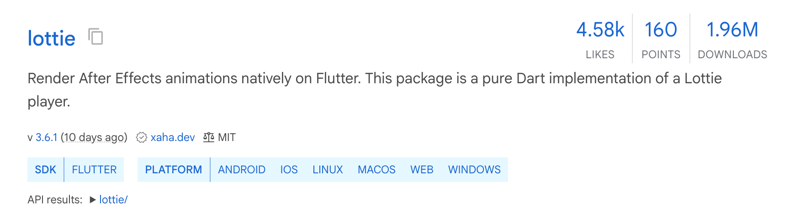
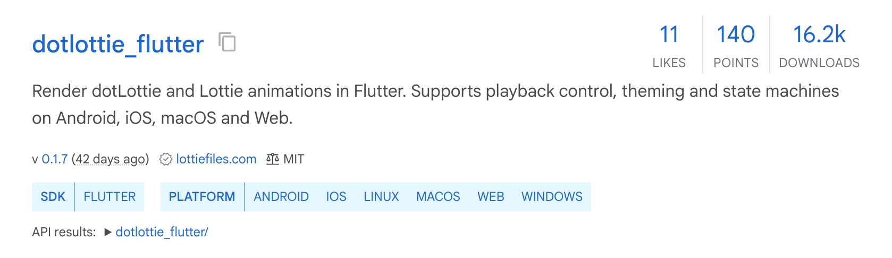
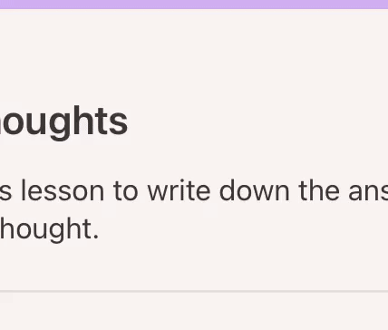

自己紹介
アヌシュカ・@opheliagame
- 2020 卒業
- Flutter Engineer
- #p5js #Processingが好き。 #つぶやきProcessingは書けないのですが。。
まず、Lottieは何か
Lottieは、After EffectsのアニメーションをJSONデータとしてシリアライズし、アプリで再生できるファイル形式です。
名前の由来： ドイツのアニメーション作家、シャルロッテ・「ロッテ」・ライニガーに由来します。

Lottieのざっくりした歴史
2015BodymovinがAfter
EffectsのアニメーションをJSONに書き出す。
2017AirbnbがiOS、Android、React
Native向けのライブラリを公開。
2018Microsoftと.NET FoundationがWindows向けライブラリを公開。
2019Qt、Samsung、Pythonなどにも対応が広がる。
2020複数のLottieと素材をまとめるdotLottieが登場。
2023ThorVGがLottieの描画に対応。
2024Lottie Animation Communityが形式の標準化を開始。
ファイルの種類
flowchart TD ae["Adobe After Effects"] --> plugin["LottieFiles プラグイン"] plugin --> json[".json"] plugin --> optimizedJson["最適化 .json"] plugin --> lottie[".lottie"] plugin --> optimizedLottie["最適化 .lottie"] json --> flutter["Flutter"] optimizedJson --> flutter lottie --> flutter optimizedLottie --> flutter
Flutterで使うパッケージ
lottie
Airbnbのlottie-androidを元にDart化
ベルギーの Xavierさん が個人開発

- 🟢 .json 再生サポート
- 🟡 .lottie 再生サポート
- 🔴 .lottie ステートマシンサポート
dotlottie-flutter
LottieFilesという会社がオープンソースで開発

- 🟢 .json 再生サポート
- 🟢 .lottie 再生サポート
- 🟢 .lottie ステートマシンサポート
サポート外の機能
例：自動方向 / Auto Orient

- Web：想定通り
- Android：サポートなし
- iOS：サポートなし
「対応しているか」を、プラットフォームごとに確認するのが必要
チェックリスト
想定通りに動かすために
- 素材作成段階：サポートマトリックスをデザインと共有
- 素材取り込み段階：Web Previewだけでなく、スマホでも確認
- 想定通りでない場合：デザイン側と相談し、素材を修正
- 効率化：JSONや.lottieを最適化し、読み込みと描画の負荷を下げる